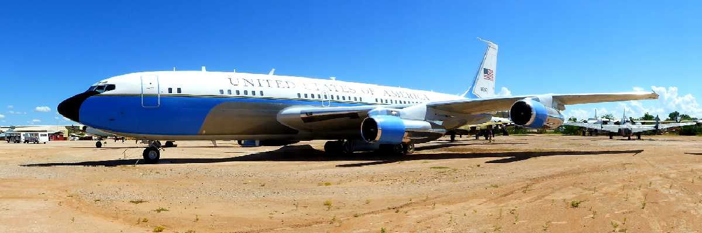
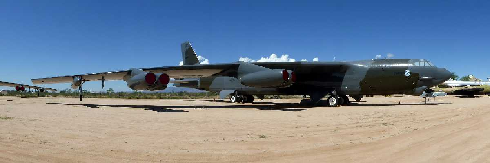
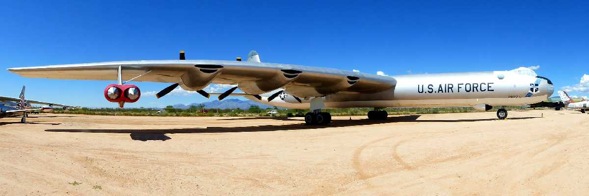
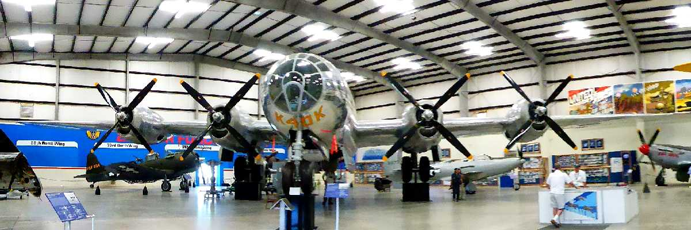
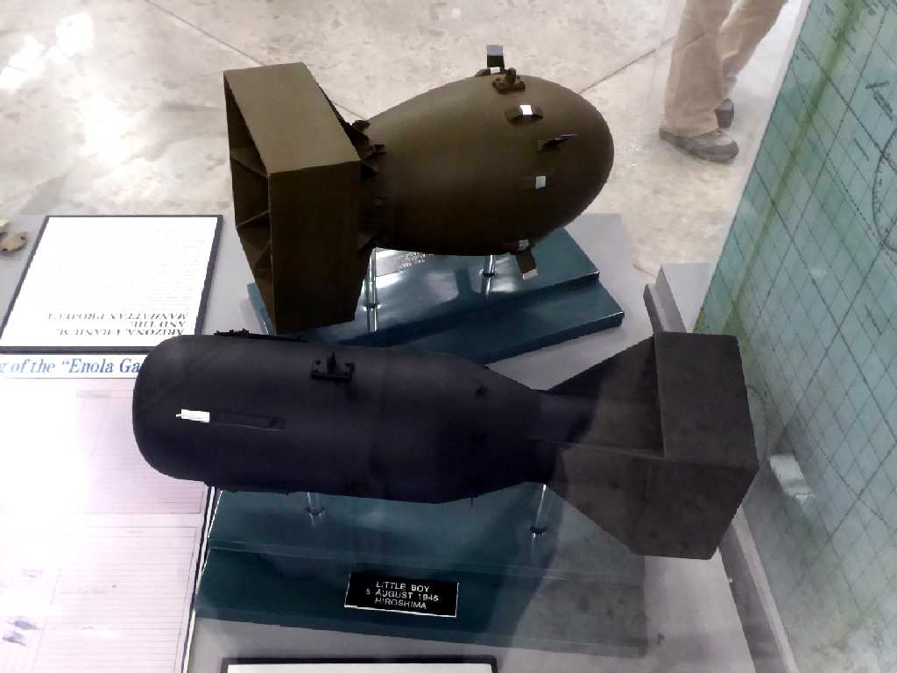
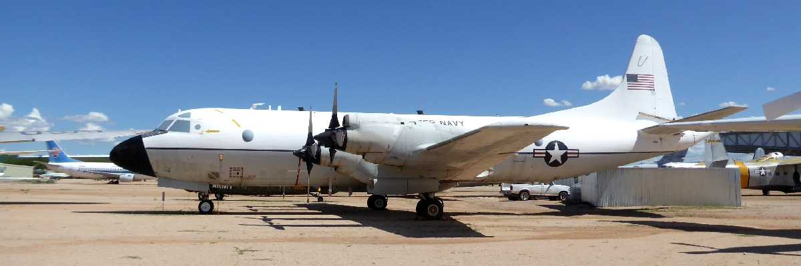
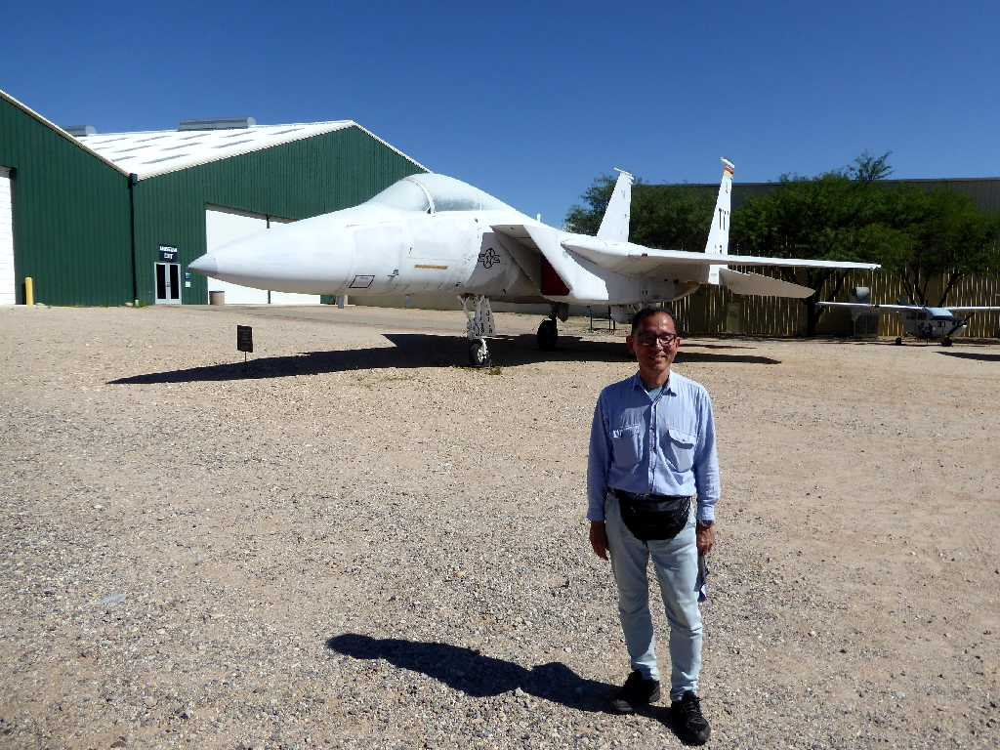
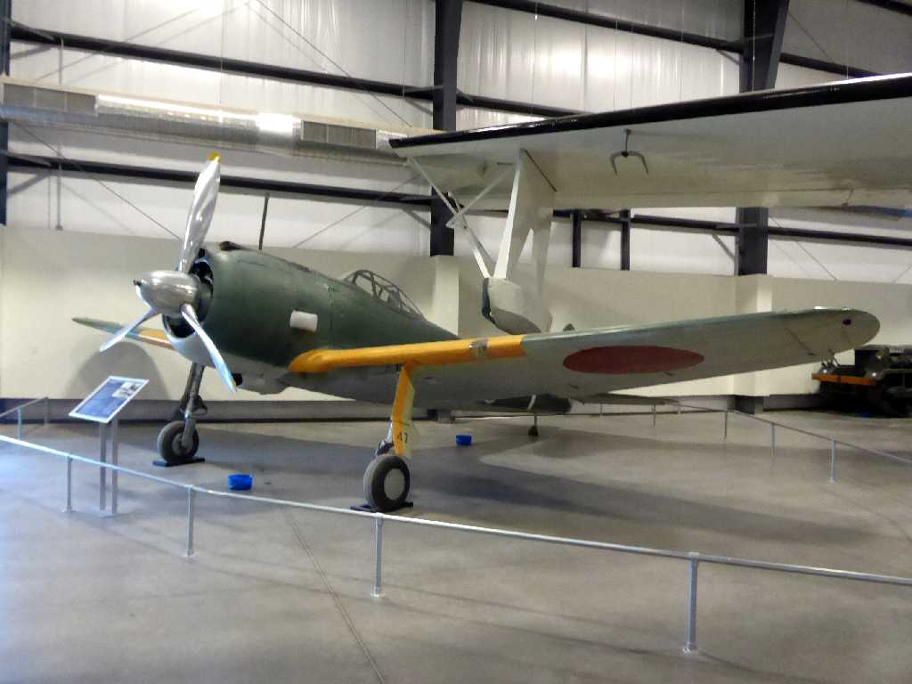
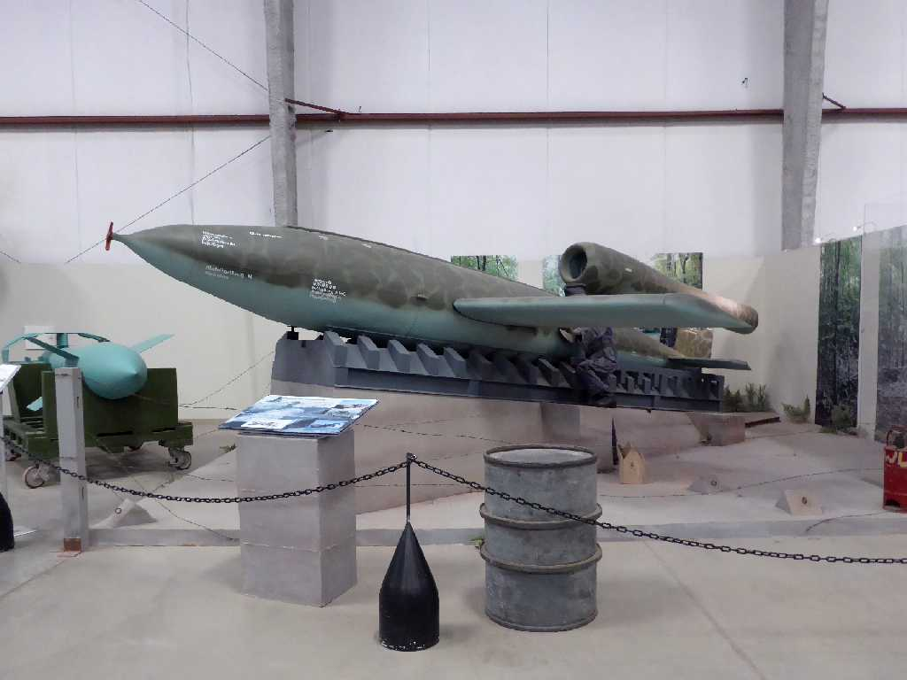
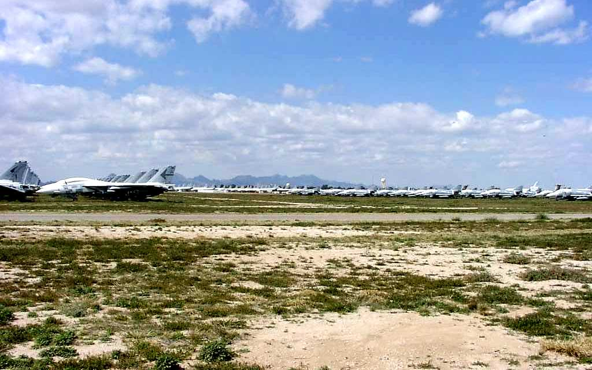

B787 Pima Air & Space Museum
全日空がＢ７８７の最初の購入者で納入前のテストに使用された機体

Air Force One
アメリカ合衆国大統領専用機

B-52 Strategic Bomber Stratofortress
ベトナム戦争に用いられたＢ-５２戦略爆撃機は死の鳥と云われ恐れられた

B-36 Strategic Bomber Peacemaker
冷戦初期の主力を担ったＢ-３６戦略爆撃機

B-29 Bomber Superfortress
第二次世界大戦で用いられたＢ-２９大型爆撃機

Atomic Bomb
広島と長崎に投下された原子爆弾

P-3C
自衛隊の哨戒機Ｐ-３Ｃ

August 24 2017 F-15 Pima Air & Space Museum
自衛隊の主力戦闘機Ｆ-１５

Hayabusa Ki-43
一式戦闘機 ｷ43 隼 は海軍の零式艦上戦闘機に次いで多く生産された陸軍の主力戦闘機

V-1 Flying Bomb
第二次世界大戦でドイツが使用した飛行爆弾Ｖ-１は初期のジェットエンジンを搭載した巡航ミサイルの始祖

Plane graveyard
ピマ航空宇宙博物館は引退した飛行機の墓場に隣接している